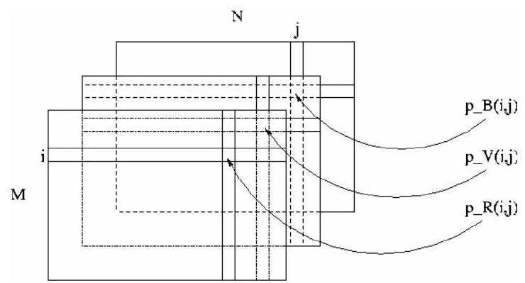

Initiation au traitement d'images avec MATLAB
Table des matières
- Introduction
- Lire et écrire des images sous Matlab
- Opérations géométriques
- Histogramme - seuillage
- Détection de contours
- Espace de couleurs
- Transformée de Fourier
- Conclusion
Introduction
-
L'objectif de cette introduction au traitement d'images sous Matlab :
-
présenter la notion d'image
-
effectuer des opérations simples d'analyse d'images telles que la détection de contours, le changement d'espace de couleur...
-
-
Le traitement d'images est un thème de recherche situé entre l'informatique et le traitement du signal.
I.1. Rappels sur la notion d'image
-
Une image réelle est obtenue à partir d'un signal continu bidimensionnel comme par exemple un appareil photo ou une caméra...
-
Sur un ordinateur, on ne peut pas représenter de signaux continus, on travaille donc sur des valeurs discrètes.
-
Définition: Une image numérique est définie comme un signal fini bidimensionnel échantillonné à valeurs quantifiées dans un certain espace de couleurs.
Elle est constituée de points (pixels).
-
Signal fini : une image possède des dimensions finies, exemple : 640x480, 800x600 points...
-
Signal bidimensionnel : une image possède deux dimensions : largeur, hauteur.
-
Signal échantillonné : les pixels d'une image sont régulièrement espacés sur une grille carrée.
-
Valeurs quantifiées : les valeurs des pixels appartiennent à un intervalle borné connu.
-
Espace de couleur : il existe de nombreuses façon de percevoir les couleurs d'une image, l'espace de représentation le plus connu est l'espace rgb (rouge-vertbleu).

p(i,j) est le niveau de gris du pixel de coordonnées ligne i et colonne dans l'image. .
Les valeurs des niveaux de gris sont des entiers.
I.1.1. Image binaire
-
Une image binaire est une image où chaque point peut prendre uniquement la valeur 0 ou
-
Les pixels sont noirs (0) ou blancs (1).
-
Le niveau de gris est codé sur un bit (Binary digIT).
I.1.2. Image en niveaux de gris
-
Une image ne niveaux de gris autorise un dégradé de gris entre le noir et le blanc.
-
En général, on code le niveau de gris sur un octet ( 8 bits) soit 256 nuances de dégradé.
L'expression de la valeur du niveau de gris avec devient: .
-
Une image couleur est la composition de trois (ou plus) images en niveaux de gris sur trois (ou plus) composantes.
-
On définit donc trois plans de niveaux de gris, un rouge, un vert et un bleu.
-
La couleur finale est obtenue par synthèse additive des ces trois (ou plus) composantes.
 On a les relations sur les niveaux de gris: , .
On voit bien sur la figure qu'une image couleur est en fait base.
I.2. Rappels sous Matlab :
-
Une image Matlab est une matrice bidimensionnelle de valeurs entières ou réelles.
-
Les principales fonctions de traitement d'images sous Matlab se trouvent dans la boîte à outils (toolbox) image processing (traitement d'images).
-
L'aide sur cette boîte à outils est obtenue en tapant help images en ligne de commande de Matlab.
-
Ensuite, l'aide sur une commande particulière est obtenue en tapant help suivi du nom de la commande, par exemple help edge.
Image display.
-
colorbar - Display colorbar (MATLAB Toolbox).
-
getimage - Get image data from axes.
-
image - Create and display image object (MATLAB Toolbox).
-
imagesc - Scale data and display as image (MATLAB Toolbox).
-
immovie - Make movie from multiframe indexed image.
-
imshow - Display image. montage - Display multiple image frames as rectangular montage.
-
subimage - Display multiple images in single figure.
-
truesize - Adjust display size of image.
-
warp - Display image as texture-mapped surface.
-
zoom - Zoom in and out of image or 2-D plot (MATLAB Toolbox).
Image file I/O.
-
imfinfo - Return information about image file (MATLAB Toolbox).
-
imread - Read image file (MATLAB Toolbox).
-
imwrite - Write image file (MATLAB Toolbox).
Geometric operations.
-
imcrop - Crop image.
-
imresize - Resize image.
-
imrotate - Rotate image.
-
interp2 - 2-D data interpolation (MATLAB Toolbox).
Pixel values and statistics.
-
corr2 - Compute 2-D correlation coefficient.
-
imcontour - Create contour plot of image data.
-
imfeature - Compute feature measurements for image regions.
-
imhist - Display histogram of image data.
-
impixel - Determine pixel color values.
-
improfile - Compute pixel-value cross-sections along line segments.
-
mean2 - Compute mean of matrix elements.
-
pixval - Display information about image pixels.
-
std2 - Compute standard deviation of matrix elements.
Image analysis.
-
edge - Find edges in intensity image.
-
qtdecomp - Perform quadtree decomposition.
-
qtgetblk - Get block values in quadtree decomposition. qtsetblk - Set block values in quadtree decomposition.
Image enhancement.
-
histeq - Enhance contrast using histogram equalization.
-
imadjust - Adjust image intensity values or colormap.
-
imnoise - Add noise to an image. medfilt2 - Perform 2-D median filtering.
-
ordfilt2 - Perform 2-D order-statistic filtering.
-
wiener2 - Perform 2-D adaptive noise-removal filtering.
Linear filtering.
-
conv2 - Perform 2-D convolution (MATLAB Toolbox).
-
convmtx2 - Compute 2-D convolution matrix. convn Perform N-D convolution (MATLAB Toolbox).
-
filter2 - Perform 2-D linear filtering (MATLABToolbox).
-
fspecial - Create predefined filters.
Linear 2-D filter design.
-
freqspace - Determine 2-D frequency response spacing (MATLABToolbox).
-
freqz2 - Compute 2-D frequency response.
-
fsamp2 - Design 2-D FIR filter using frequency sampling.
-
ftrans2 - Design 2-D FIR filter using frequency transformation.
-
fwind1 - Design 2-D FIR filter using 1-D window method.
-
fwind2 - Design 2-D FIR filter using 2-D window method.
Image transforms
-
dct2 - Compute 2-D discrete cosine transform.
-
dctmtx - Compute discrete cosine transform matrix.
-
fft2 - Compute 2-D fast Fourier transform (MATLAB Toolbox).
-
fftn - Compute N-D fast Fourier transform (MATLAB Toolbox).
-
fftshift - Reverse quadrants of output of FFT (MATLAB Toolbox).
-
idct2 - Compute 2-D inverse discrete cosine transform.
-
ifft2 - Compute 2-D inverse fast Fourier transform (MATLAB Toolbox).
-
ifftn - Compute N-D inverse fast Fourier transform (MATLAB Toolbox).
-
iradon - Compute inverse Radon transform. phantom - Generate a head phantom image.
-
radon - Compute Radon transform.
Neighborhood and block processing.
-
bestblk - Choose block size for block processing.
-
blkproc - Implement distinct block processing for image.
-
col2im - Rearrange matrix columns into blocks.
-
colfilt - Perform neighborhood operations using columnwise functions.
-
im2col - Rearrange image blocks into columns.
-
nlfilter - Perform general sliding-neighborhood operations.
Binary image operations.
-
applylut - Perform neighborhood operations using lookup tables.
-
bwarea - Compute area of objects in binary image.
-
bweuler - Compute Euler number of binary image.
-
bwfill - Fill background regions in binary image.
-
bwlabel - Label connected components in binary image.
-
bwmorph - Perform morphological operations on binary image.
-
bwperim - Determine perimeter of objects in binary image.
-
bwselect - Select objects in binary image.
-
dilate - Perform dilation on binary image.
-
erode - Perform erosion on binary image.
-
makelut - Construct lookup table for use with applylut.
Region-based processing.
-
roicolor - Select region of interest, based on color.
-
roifill - Smoothly interpolate within arbitrary region.
-
roifilt2 - Filter a region of interest.
-
roipoly - Select polygonal region of interest.
Colormap manipulation.
-
brighten - Brighten or darken colormap (MATLAB Toolbox).
-
cmpermute - Rearrange colors in colormap.
-
cmunique - Find unique colormap colors and corresponding image.
-
colormap - Set or get color lookup table (MATLAB Toolbox).
-
imapprox - Approximate indexed image by one with fewer colors.
-
rgbplot - Plot RGB colormap components (MATLAB Toolbox).
Color space conversions.
-
hsv2rgb - Convert HSV values to RGB color space (MATLAB Toolbox).
-
ntsc2rgb - Convert NTSC values to RGB color space.
-
rgb2hsv - Convert RGB values to HSV color space (MATLAB Toolbox).
-
rgb2ntsc - Convert RGB values to NTSC color space.
-
rgb2ycbcr - Convert RGB values to YCBCR color space.
-
ycbcr2rgb - ConvertYCBCR values to RGB color space.
Imager types and type conversions.
-
gray2ind - Convert intensity image to indexed image.
-
grayslice - Create indexed image from intensity image by thresholding.
-
im2bw - Convert image to binary image by thresholding.
-
im2double - Convert image array to double precision.
-
im2uint8 - Convert image array to 8-bit unsigned integers.
-
im2uint16 - Convert image array to 16-bit unsigned integers.
-
ind2gray - Convert indexed image to intensity image.
-
ind2rgb - Convert indexed image to RGB image (MATLAB Toolbox).
-
isbw - Return true for binary image.
-
isgray - Return true for intensity image.
-
isind - Return true for indexed image.
-
isrgb - Return true for RGB image.
-
mat2gray - Convert matrix to intensity image.
-
rgb2gray - Convert RGB image or colormap to grayscale.
-
rgb2ind - Convert RGB image to indexed image.
Demos.
-
dctdemo - 2-D DCT image compression demo.
-
edgedemo - Edge detection demo.
-
firdemo - 2-D FIR filtering and filter design demo.
-
imadjdemo - Intensity adjustment and histogram equalization demo.
-
nrfiltdemo - Noise reduction filtering demo.
-
qtdemo - Quadtree decomposition demo.
-
roidemo - Region-of-interest processing demo.
-
Comme on peut le constater, la boîte à outils images de Matlab contient de nombreuses fonctions qui permettent le développement facile et rapide d'algorithmes en fonction du problème à traiter.
-
C'est un très bon outil pour la validation de méthodes de traitement d'images appliquées à un problème particulier.